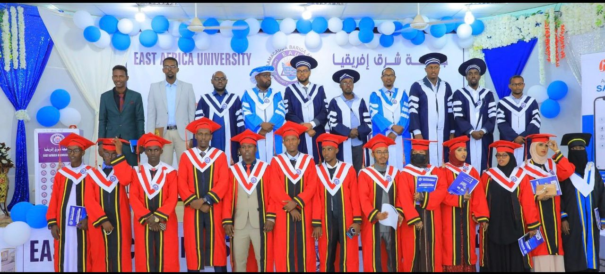
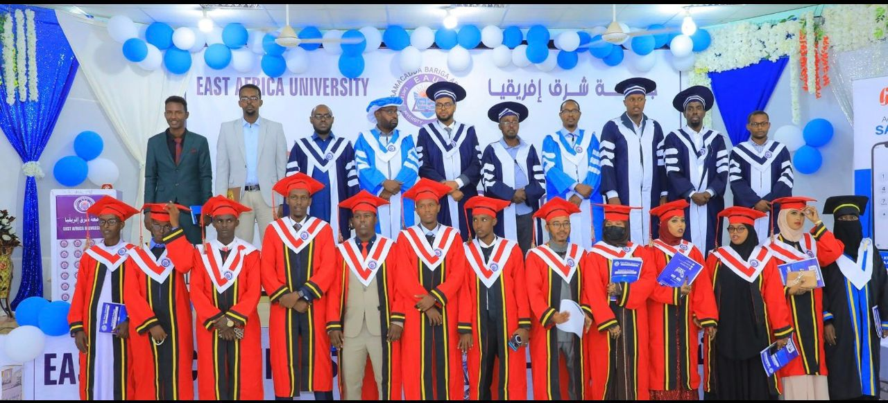
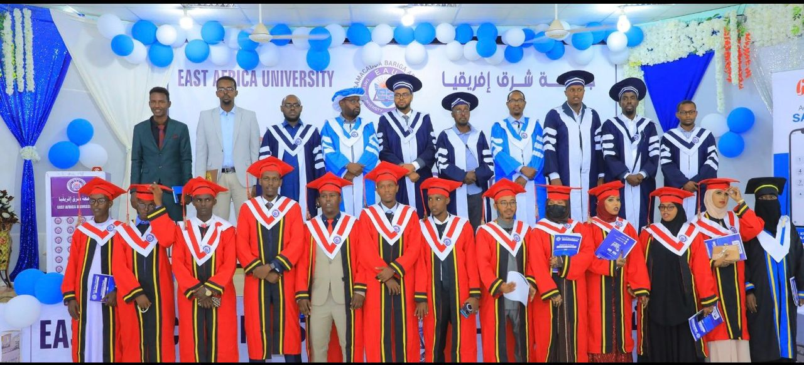

STUDENT WORKS
 

Ardayda Kulliyadda Culuumta caafimaadka gaar ahaan Nursing iyo Midwifery iyagoo kaashanaya macalimiintooda ayaa booqasho ku tagay MCHka Isniino.
Learn MoreShirweynaha “Kaalinta Waxbarashada ku leedahay Dhismaha Mustaqbalka Bulshada Soomaaliyeed” oo ay soo agaasintay Hay’adda DAD ayaa lagu qabtay Bosaso.
Learn MoreArdayda Dufcadda 25aad ee Jaamacadda Bariga Afrika Bosaso ayaa si farxad leh u qalinjabiyey.
Learn MoreFounded in 1999 in Somalia, East Africa University (EAU) is a leading institution committed to quality higher education and academic excellence. Established by Somali scholars and community elders, EAU has expanded its programs, campuses, and leadership to meet international standards.
The university prepares students across the Horn of Africa with the knowledge and skills needed to succeed in a global society.
Learn MoreUndergraduate programs provide foundational degrees that equip students with broad knowledge and essential skills in their chosen fields, preparing them for future studies or careers.
Graduate programs offer advanced study for specialized knowledge, professional growth, and career advancement, helping students deepen expertise in their discipline.
Doctoral and PhD programs are research-focused, developing high-level expertise while enabling students to contribute new knowledge and innovations.
